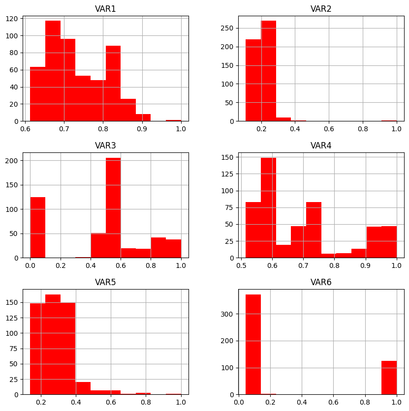
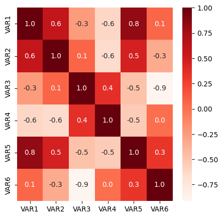
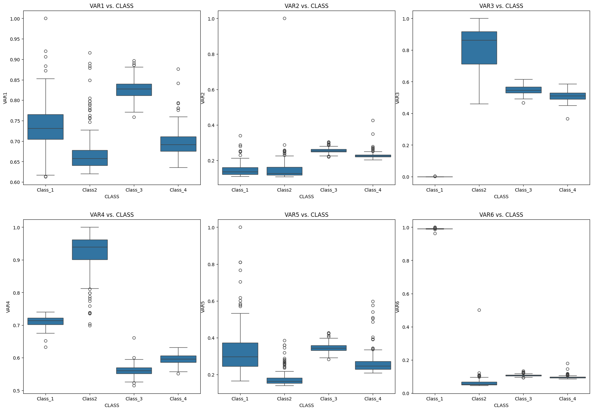
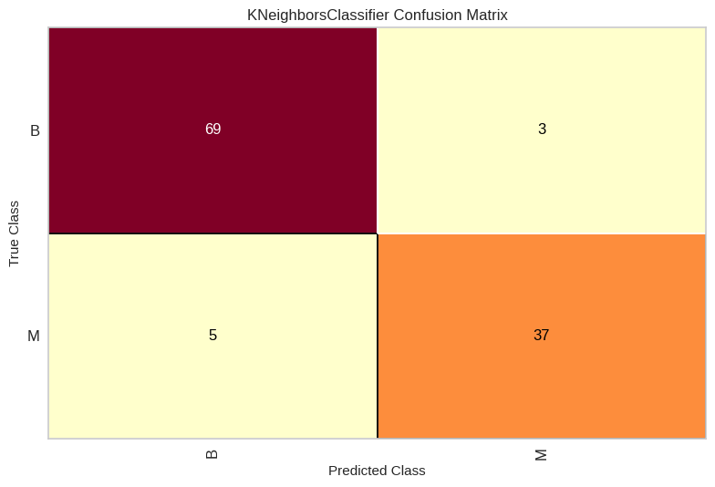
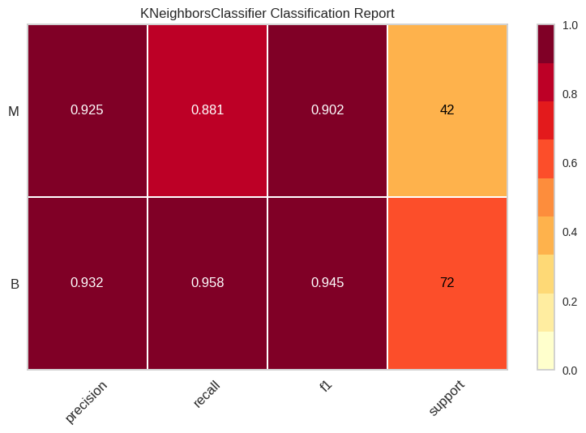
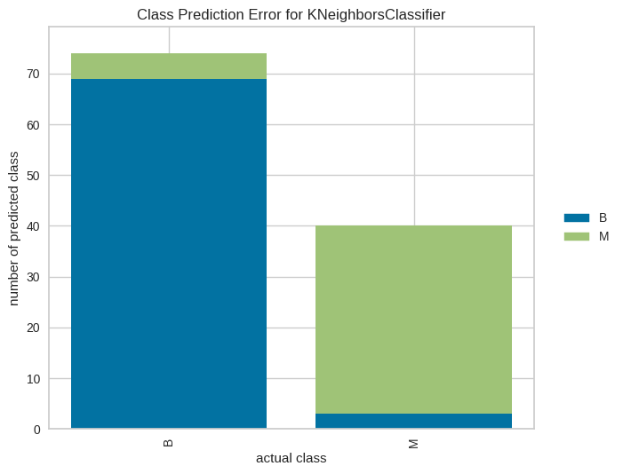

Ejemplo de ciencia de datos#
Lectura del dataset#
# Ruta donde se encuentran los datos en Github
path_datos = "https://raw.githubusercontent.com/BioAITeamLearning/IntroPython_2024_01_UAI/main/Data/"
import pandas as pd
# Leer el dataset
df = pd.read_csv(path_datos+"/wisc_bc_data.csv")
df2 = pd.read_csv(path_datos+"/BDParkinson_Prediction.csv")
# Mostrar el dataframe
df.head(20)
| id | diagnosis | radius_mean | texture_mean | perimeter_mean | area_mean | smoothness_mean | compactness_mean | concavity_mean | concave points_mean | ... | radius_worst | texture_worst | perimeter_worst | area_worst | smoothness_worst | compactness_worst | concavity_worst | concave points_worst | symmetry_worst | fractal_dimension_worst | |
|---|---|---|---|---|---|---|---|---|---|---|---|---|---|---|---|---|---|---|---|---|---|
| 0 | 842302 | M | 17.99 | 10.38 | 122.80 | 1001.0 | 0.11840 | 0.27760 | 0.30010 | 0.14710 | ... | 25.38 | 17.33 | 184.60 | 2019.0 | 0.1622 | 0.6656 | 0.7119 | 0.26540 | 0.4601 | 0.11890 |
| 1 | 842517 | M | 20.57 | 17.77 | 132.90 | 1326.0 | 0.08474 | 0.07864 | 0.08690 | 0.07017 | ... | 24.99 | 23.41 | 158.80 | 1956.0 | 0.1238 | 0.1866 | 0.2416 | 0.18600 | 0.2750 | 0.08902 |
| 2 | 84300903 | M | 19.69 | 21.25 | 130.00 | 1203.0 | 0.10960 | 0.15990 | 0.19740 | 0.12790 | ... | 23.57 | 25.53 | 152.50 | 1709.0 | 0.1444 | 0.4245 | 0.4504 | 0.24300 | 0.3613 | 0.08758 |
| 3 | 84348301 | M | 11.42 | 20.38 | 77.58 | 386.1 | 0.14250 | 0.28390 | 0.24140 | 0.10520 | ... | 14.91 | 26.50 | 98.87 | 567.7 | 0.2098 | 0.8663 | 0.6869 | 0.25750 | 0.6638 | 0.17300 |
| 4 | 84358402 | M | 20.29 | 14.34 | 135.10 | 1297.0 | 0.10030 | 0.13280 | 0.19800 | 0.10430 | ... | 22.54 | 16.67 | 152.20 | 1575.0 | 0.1374 | 0.2050 | 0.4000 | 0.16250 | 0.2364 | 0.07678 |
| 5 | 843786 | M | 12.45 | 15.70 | 82.57 | 477.1 | 0.12780 | 0.17000 | 0.15780 | 0.08089 | ... | 15.47 | 23.75 | 103.40 | 741.6 | 0.1791 | 0.5249 | 0.5355 | 0.17410 | 0.3985 | 0.12440 |
| 6 | 844359 | M | 18.25 | 19.98 | 119.60 | 1040.0 | 0.09463 | 0.10900 | 0.11270 | 0.07400 | ... | 22.88 | 27.66 | 153.20 | 1606.0 | 0.1442 | 0.2576 | 0.3784 | 0.19320 | 0.3063 | 0.08368 |
| 7 | 84458202 | M | 13.71 | 20.83 | 90.20 | 577.9 | 0.11890 | 0.16450 | 0.09366 | 0.05985 | ... | 17.06 | 28.14 | 110.60 | 897.0 | 0.1654 | 0.3682 | 0.2678 | 0.15560 | 0.3196 | 0.11510 |
| 8 | 844981 | M | 13.00 | 21.82 | 87.50 | 519.8 | 0.12730 | 0.19320 | 0.18590 | 0.09353 | ... | 15.49 | 30.73 | 106.20 | 739.3 | 0.1703 | 0.5401 | 0.5390 | 0.20600 | 0.4378 | 0.10720 |
| 9 | 84501001 | M | 12.46 | 24.04 | 83.97 | 475.9 | 0.11860 | 0.23960 | 0.22730 | 0.08543 | ... | 15.09 | 40.68 | 97.65 | 711.4 | 0.1853 | 1.0580 | 1.1050 | 0.22100 | 0.4366 | 0.20750 |
| 10 | 845636 | M | 16.02 | 23.24 | 102.70 | 797.8 | 0.08206 | 0.06669 | 0.03299 | 0.03323 | ... | 19.19 | 33.88 | 123.80 | 1150.0 | 0.1181 | 0.1551 | 0.1459 | 0.09975 | 0.2948 | 0.08452 |
| 11 | 84610002 | M | 15.78 | 17.89 | 103.60 | 781.0 | 0.09710 | 0.12920 | 0.09954 | 0.06606 | ... | 20.42 | 27.28 | 136.50 | 1299.0 | 0.1396 | 0.5609 | 0.3965 | 0.18100 | 0.3792 | 0.10480 |
| 12 | 846226 | M | 19.17 | 24.80 | 132.40 | 1123.0 | 0.09740 | 0.24580 | 0.20650 | 0.11180 | ... | 20.96 | 29.94 | 151.70 | 1332.0 | 0.1037 | 0.3903 | 0.3639 | 0.17670 | 0.3176 | 0.10230 |
| 13 | 846381 | M | 15.85 | 23.95 | 103.70 | 782.7 | 0.08401 | 0.10020 | 0.09938 | 0.05364 | ... | 16.84 | 27.66 | 112.00 | 876.5 | 0.1131 | 0.1924 | 0.2322 | 0.11190 | 0.2809 | 0.06287 |
| 14 | 84667401 | M | 13.73 | 22.61 | 93.60 | 578.3 | 0.11310 | 0.22930 | 0.21280 | 0.08025 | ... | 15.03 | 32.01 | 108.80 | 697.7 | 0.1651 | 0.7725 | 0.6943 | 0.22080 | 0.3596 | 0.14310 |
| 15 | 84799002 | M | 14.54 | 27.54 | 96.73 | 658.8 | 0.11390 | 0.15950 | 0.16390 | 0.07364 | ... | 17.46 | 37.13 | 124.10 | 943.2 | 0.1678 | 0.6577 | 0.7026 | 0.17120 | 0.4218 | 0.13410 |
| 16 | 848406 | M | 14.68 | 20.13 | 94.74 | 684.5 | 0.09867 | 0.07200 | 0.07395 | 0.05259 | ... | 19.07 | 30.88 | 123.40 | 1138.0 | 0.1464 | 0.1871 | 0.2914 | 0.16090 | 0.3029 | 0.08216 |
| 17 | 84862001 | M | 16.13 | 20.68 | 108.10 | 798.8 | 0.11700 | 0.20220 | 0.17220 | 0.10280 | ... | 20.96 | 31.48 | 136.80 | 1315.0 | 0.1789 | 0.4233 | 0.4784 | 0.20730 | 0.3706 | 0.11420 |
| 18 | 849014 | M | 19.81 | 22.15 | 130.00 | 1260.0 | 0.09831 | 0.10270 | 0.14790 | 0.09498 | ... | 27.32 | 30.88 | 186.80 | 2398.0 | 0.1512 | 0.3150 | 0.5372 | 0.23880 | 0.2768 | 0.07615 |
| 19 | 8510426 | B | 13.54 | 14.36 | 87.46 | 566.3 | 0.09779 | 0.08129 | 0.06664 | 0.04781 | ... | 15.11 | 19.26 | 99.70 | 711.2 | 0.1440 | 0.1773 | 0.2390 | 0.12880 | 0.2977 | 0.07259 |
20 rows × 32 columns
# Mostrar todas las columnas del dataframe
pd.options.display.max_columns = None
# Mostrar el dataframe ya con todas las columnas
df.head(5)
| id | diagnosis | radius_mean | texture_mean | perimeter_mean | area_mean | smoothness_mean | compactness_mean | concavity_mean | concave points_mean | symmetry_mean | fractal_dimension_mean | radius_se | texture_se | perimeter_se | area_se | smoothness_se | compactness_se | concavity_se | concave points_se | symmetry_se | fractal_dimension_se | radius_worst | texture_worst | perimeter_worst | area_worst | smoothness_worst | compactness_worst | concavity_worst | concave points_worst | symmetry_worst | fractal_dimension_worst | |
|---|---|---|---|---|---|---|---|---|---|---|---|---|---|---|---|---|---|---|---|---|---|---|---|---|---|---|---|---|---|---|---|---|
| 0 | 842302 | M | 17.99 | 10.38 | 122.80 | 1001.0 | 0.11840 | 0.27760 | 0.3001 | 0.14710 | 0.2419 | 0.07871 | 1.0950 | 0.9053 | 8.589 | 153.40 | 0.006399 | 0.04904 | 0.05373 | 0.01587 | 0.03003 | 0.006193 | 25.38 | 17.33 | 184.60 | 2019.0 | 0.1622 | 0.6656 | 0.7119 | 0.2654 | 0.4601 | 0.11890 |
| 1 | 842517 | M | 20.57 | 17.77 | 132.90 | 1326.0 | 0.08474 | 0.07864 | 0.0869 | 0.07017 | 0.1812 | 0.05667 | 0.5435 | 0.7339 | 3.398 | 74.08 | 0.005225 | 0.01308 | 0.01860 | 0.01340 | 0.01389 | 0.003532 | 24.99 | 23.41 | 158.80 | 1956.0 | 0.1238 | 0.1866 | 0.2416 | 0.1860 | 0.2750 | 0.08902 |
| 2 | 84300903 | M | 19.69 | 21.25 | 130.00 | 1203.0 | 0.10960 | 0.15990 | 0.1974 | 0.12790 | 0.2069 | 0.05999 | 0.7456 | 0.7869 | 4.585 | 94.03 | 0.006150 | 0.04006 | 0.03832 | 0.02058 | 0.02250 | 0.004571 | 23.57 | 25.53 | 152.50 | 1709.0 | 0.1444 | 0.4245 | 0.4504 | 0.2430 | 0.3613 | 0.08758 |
| 3 | 84348301 | M | 11.42 | 20.38 | 77.58 | 386.1 | 0.14250 | 0.28390 | 0.2414 | 0.10520 | 0.2597 | 0.09744 | 0.4956 | 1.1560 | 3.445 | 27.23 | 0.009110 | 0.07458 | 0.05661 | 0.01867 | 0.05963 | 0.009208 | 14.91 | 26.50 | 98.87 | 567.7 | 0.2098 | 0.8663 | 0.6869 | 0.2575 | 0.6638 | 0.17300 |
| 4 | 84358402 | M | 20.29 | 14.34 | 135.10 | 1297.0 | 0.10030 | 0.13280 | 0.1980 | 0.10430 | 0.1809 | 0.05883 | 0.7572 | 0.7813 | 5.438 | 94.44 | 0.011490 | 0.02461 | 0.05688 | 0.01885 | 0.01756 | 0.005115 | 22.54 | 16.67 | 152.20 | 1575.0 | 0.1374 | 0.2050 | 0.4000 | 0.1625 | 0.2364 | 0.07678 |
# Mostrar nombres de las columnas
list(df.columns.values)
['id',
'diagnosis',
'radius_mean',
'texture_mean',
'perimeter_mean',
'area_mean',
'smoothness_mean',
'compactness_mean',
'concavity_mean',
'concave points_mean',
'symmetry_mean',
'fractal_dimension_mean',
'radius_se',
'texture_se',
'perimeter_se',
'area_se',
'smoothness_se',
'compactness_se',
'concavity_se',
'concave points_se',
'symmetry_se',
'fractal_dimension_se',
'radius_worst',
'texture_worst',
'perimeter_worst',
'area_worst',
'smoothness_worst',
'compactness_worst',
'concavity_worst',
'concave points_worst',
'symmetry_worst',
'fractal_dimension_worst']
Eliminar columnas innecesarias del dataset#
# Eliminar la columna de identificación, esta no se puede usar como feature
df = df.drop(['id'], axis=1)
# Mostramos el df sin la identificación
df.head()
| diagnosis | radius_mean | texture_mean | perimeter_mean | area_mean | smoothness_mean | compactness_mean | concavity_mean | concave points_mean | symmetry_mean | fractal_dimension_mean | radius_se | texture_se | perimeter_se | area_se | smoothness_se | compactness_se | concavity_se | concave points_se | symmetry_se | fractal_dimension_se | radius_worst | texture_worst | perimeter_worst | area_worst | smoothness_worst | compactness_worst | concavity_worst | concave points_worst | symmetry_worst | fractal_dimension_worst | |
|---|---|---|---|---|---|---|---|---|---|---|---|---|---|---|---|---|---|---|---|---|---|---|---|---|---|---|---|---|---|---|---|
| 0 | M | 17.99 | 10.38 | 122.80 | 1001.0 | 0.11840 | 0.27760 | 0.3001 | 0.14710 | 0.2419 | 0.07871 | 1.0950 | 0.9053 | 8.589 | 153.40 | 0.006399 | 0.04904 | 0.05373 | 0.01587 | 0.03003 | 0.006193 | 25.38 | 17.33 | 184.60 | 2019.0 | 0.1622 | 0.6656 | 0.7119 | 0.2654 | 0.4601 | 0.11890 |
| 1 | M | 20.57 | 17.77 | 132.90 | 1326.0 | 0.08474 | 0.07864 | 0.0869 | 0.07017 | 0.1812 | 0.05667 | 0.5435 | 0.7339 | 3.398 | 74.08 | 0.005225 | 0.01308 | 0.01860 | 0.01340 | 0.01389 | 0.003532 | 24.99 | 23.41 | 158.80 | 1956.0 | 0.1238 | 0.1866 | 0.2416 | 0.1860 | 0.2750 | 0.08902 |
| 2 | M | 19.69 | 21.25 | 130.00 | 1203.0 | 0.10960 | 0.15990 | 0.1974 | 0.12790 | 0.2069 | 0.05999 | 0.7456 | 0.7869 | 4.585 | 94.03 | 0.006150 | 0.04006 | 0.03832 | 0.02058 | 0.02250 | 0.004571 | 23.57 | 25.53 | 152.50 | 1709.0 | 0.1444 | 0.4245 | 0.4504 | 0.2430 | 0.3613 | 0.08758 |
| 3 | M | 11.42 | 20.38 | 77.58 | 386.1 | 0.14250 | 0.28390 | 0.2414 | 0.10520 | 0.2597 | 0.09744 | 0.4956 | 1.1560 | 3.445 | 27.23 | 0.009110 | 0.07458 | 0.05661 | 0.01867 | 0.05963 | 0.009208 | 14.91 | 26.50 | 98.87 | 567.7 | 0.2098 | 0.8663 | 0.6869 | 0.2575 | 0.6638 | 0.17300 |
| 4 | M | 20.29 | 14.34 | 135.10 | 1297.0 | 0.10030 | 0.13280 | 0.1980 | 0.10430 | 0.1809 | 0.05883 | 0.7572 | 0.7813 | 5.438 | 94.44 | 0.011490 | 0.02461 | 0.05688 | 0.01885 | 0.01756 | 0.005115 | 22.54 | 16.67 | 152.20 | 1575.0 | 0.1374 | 0.2050 | 0.4000 | 0.1625 | 0.2364 | 0.07678 |
Análisis exploratorio de datos (Exploratory data analysis - EDA)#
# Cantidad de clases
print(f'Número de clases {len(df["diagnosis"].value_counts())}')
Número de clases 2
# Frecuencia por clase
print(df["diagnosis"].value_counts())
ax = df['diagnosis'].value_counts().plot(kind='bar')
ax.set_title('Clases')
ax.set_ylabel('Frecuencia')
diagnosis
B 357
M 212
Name: count, dtype: int64
Text(0, 0.5, 'Frecuencia')
# Cuenta de datos en las features, se puede verificar que no haya features con valores nulos
df.groupby("diagnosis").count()
| radius_mean | texture_mean | perimeter_mean | area_mean | smoothness_mean | compactness_mean | concavity_mean | concave points_mean | symmetry_mean | fractal_dimension_mean | radius_se | texture_se | perimeter_se | area_se | smoothness_se | compactness_se | concavity_se | concave points_se | symmetry_se | fractal_dimension_se | radius_worst | texture_worst | perimeter_worst | area_worst | smoothness_worst | compactness_worst | concavity_worst | concave points_worst | symmetry_worst | fractal_dimension_worst | |
|---|---|---|---|---|---|---|---|---|---|---|---|---|---|---|---|---|---|---|---|---|---|---|---|---|---|---|---|---|---|---|
| diagnosis | ||||||||||||||||||||||||||||||
| B | 357 | 357 | 357 | 357 | 357 | 357 | 357 | 357 | 357 | 357 | 357 | 357 | 357 | 357 | 357 | 357 | 357 | 357 | 357 | 357 | 357 | 357 | 357 | 357 | 357 | 357 | 357 | 357 | 357 | 357 |
| M | 212 | 212 | 212 | 212 | 212 | 212 | 212 | 212 | 212 | 212 | 212 | 212 | 212 | 212 | 212 | 212 | 212 | 212 | 212 | 212 | 212 | 212 | 212 | 212 | 212 | 212 | 212 | 212 | 212 | 212 |
# Renombrar features con espacios en los nombres
df.rename(columns={'concave points_mean':'concave_points_mean',
'concave points_se':'concave_points_se',
'concave points_worst':'concave_points_worst'},inplace=True)
# Nombre de las features, conteo de cantidades, verificación de valores nulos, ver tipo de dato de cada feature
df.info()
<class 'pandas.core.frame.DataFrame'>
RangeIndex: 569 entries, 0 to 568
Data columns (total 31 columns):
# Column Non-Null Count Dtype
--- ------ -------------- -----
0 diagnosis 569 non-null object
1 radius_mean 569 non-null float64
2 texture_mean 569 non-null float64
3 perimeter_mean 569 non-null float64
4 area_mean 569 non-null float64
5 smoothness_mean 569 non-null float64
6 compactness_mean 569 non-null float64
7 concavity_mean 569 non-null float64
8 concave_points_mean 569 non-null float64
9 symmetry_mean 569 non-null float64
10 fractal_dimension_mean 569 non-null float64
11 radius_se 569 non-null float64
12 texture_se 569 non-null float64
13 perimeter_se 569 non-null float64
14 area_se 569 non-null float64
15 smoothness_se 569 non-null float64
16 compactness_se 569 non-null float64
17 concavity_se 569 non-null float64
18 concave_points_se 569 non-null float64
19 symmetry_se 569 non-null float64
20 fractal_dimension_se 569 non-null float64
21 radius_worst 569 non-null float64
22 texture_worst 569 non-null float64
23 perimeter_worst 569 non-null float64
24 area_worst 569 non-null float64
25 smoothness_worst 569 non-null float64
26 compactness_worst 569 non-null float64
27 concavity_worst 569 non-null float64
28 concave_points_worst 569 non-null float64
29 symmetry_worst 569 non-null float64
30 fractal_dimension_worst 569 non-null float64
dtypes: float64(30), object(1)
memory usage: 137.9+ KB
# Estadísticas básicas en las features
# Cuenta de datos, media, desviación estandar, valor mínimo, cuartiles, y valor máximo
df.describe()
| radius_mean | texture_mean | perimeter_mean | area_mean | smoothness_mean | compactness_mean | concavity_mean | concave_points_mean | symmetry_mean | fractal_dimension_mean | radius_se | texture_se | perimeter_se | area_se | smoothness_se | compactness_se | concavity_se | concave_points_se | symmetry_se | fractal_dimension_se | radius_worst | texture_worst | perimeter_worst | area_worst | smoothness_worst | compactness_worst | concavity_worst | concave_points_worst | symmetry_worst | fractal_dimension_worst | |
|---|---|---|---|---|---|---|---|---|---|---|---|---|---|---|---|---|---|---|---|---|---|---|---|---|---|---|---|---|---|---|
| count | 569.000000 | 569.000000 | 569.000000 | 569.000000 | 569.000000 | 569.000000 | 569.000000 | 569.000000 | 569.000000 | 569.000000 | 569.000000 | 569.000000 | 569.000000 | 569.000000 | 569.000000 | 569.000000 | 569.000000 | 569.000000 | 569.000000 | 569.000000 | 569.000000 | 569.000000 | 569.000000 | 569.000000 | 569.000000 | 569.000000 | 569.000000 | 569.000000 | 569.000000 | 569.000000 |
| mean | 14.127292 | 19.289649 | 91.969033 | 654.889104 | 0.096360 | 0.104341 | 0.088799 | 0.048919 | 0.181162 | 0.062798 | 0.405172 | 1.216853 | 2.866059 | 40.337079 | 0.007041 | 0.025478 | 0.031894 | 0.011796 | 0.020542 | 0.003795 | 16.269190 | 25.677223 | 107.261213 | 880.583128 | 0.132369 | 0.254265 | 0.272188 | 0.114606 | 0.290076 | 0.083946 |
| std | 3.524049 | 4.301036 | 24.298981 | 351.914129 | 0.014064 | 0.052813 | 0.079720 | 0.038803 | 0.027414 | 0.007060 | 0.277313 | 0.551648 | 2.021855 | 45.491006 | 0.003003 | 0.017908 | 0.030186 | 0.006170 | 0.008266 | 0.002646 | 4.833242 | 6.146258 | 33.602542 | 569.356993 | 0.022832 | 0.157336 | 0.208624 | 0.065732 | 0.061867 | 0.018061 |
| min | 6.981000 | 9.710000 | 43.790000 | 143.500000 | 0.052630 | 0.019380 | 0.000000 | 0.000000 | 0.106000 | 0.049960 | 0.111500 | 0.360200 | 0.757000 | 6.802000 | 0.001713 | 0.002252 | 0.000000 | 0.000000 | 0.007882 | 0.000895 | 7.930000 | 12.020000 | 50.410000 | 185.200000 | 0.071170 | 0.027290 | 0.000000 | 0.000000 | 0.156500 | 0.055040 |
| 25% | 11.700000 | 16.170000 | 75.170000 | 420.300000 | 0.086370 | 0.064920 | 0.029560 | 0.020310 | 0.161900 | 0.057700 | 0.232400 | 0.833900 | 1.606000 | 17.850000 | 0.005169 | 0.013080 | 0.015090 | 0.007638 | 0.015160 | 0.002248 | 13.010000 | 21.080000 | 84.110000 | 515.300000 | 0.116600 | 0.147200 | 0.114500 | 0.064930 | 0.250400 | 0.071460 |
| 50% | 13.370000 | 18.840000 | 86.240000 | 551.100000 | 0.095870 | 0.092630 | 0.061540 | 0.033500 | 0.179200 | 0.061540 | 0.324200 | 1.108000 | 2.287000 | 24.530000 | 0.006380 | 0.020450 | 0.025890 | 0.010930 | 0.018730 | 0.003187 | 14.970000 | 25.410000 | 97.660000 | 686.500000 | 0.131300 | 0.211900 | 0.226700 | 0.099930 | 0.282200 | 0.080040 |
| 75% | 15.780000 | 21.800000 | 104.100000 | 782.700000 | 0.105300 | 0.130400 | 0.130700 | 0.074000 | 0.195700 | 0.066120 | 0.478900 | 1.474000 | 3.357000 | 45.190000 | 0.008146 | 0.032450 | 0.042050 | 0.014710 | 0.023480 | 0.004558 | 18.790000 | 29.720000 | 125.400000 | 1084.000000 | 0.146000 | 0.339100 | 0.382900 | 0.161400 | 0.317900 | 0.092080 |
| max | 28.110000 | 39.280000 | 188.500000 | 2501.000000 | 0.163400 | 0.345400 | 0.426800 | 0.201200 | 0.304000 | 0.097440 | 2.873000 | 4.885000 | 21.980000 | 542.200000 | 0.031130 | 0.135400 | 0.396000 | 0.052790 | 0.078950 | 0.029840 | 36.040000 | 49.540000 | 251.200000 | 4254.000000 | 0.222600 | 1.058000 | 1.252000 | 0.291000 | 0.663800 | 0.207500 |
df2
| VAR1 | VAR2 | VAR3 | VAR4 | VAR5 | VAR6 | CLASS | |
|---|---|---|---|---|---|---|---|
| 0 | 0.624731 | 0.135424 | 0.000000 | 0.675282 | 0.182203 | 0.962960 | Class_1 |
| 1 | 0.647223 | 0.136211 | 0.000000 | 0.679511 | 0.195903 | 0.987387 | Class_1 |
| 2 | 0.706352 | 0.187593 | 0.000000 | 0.632989 | 0.244884 | 0.991182 | Class_1 |
| 3 | 0.680291 | 0.192076 | 0.000000 | 0.651786 | 0.233528 | 0.991857 | Class_1 |
| 4 | 0.660104 | 0.161131 | 0.000000 | 0.677162 | 0.209531 | 0.991066 | Class_1 |
| ... | ... | ... | ... | ... | ... | ... | ... |
| 495 | 0.712586 | 0.219776 | 0.510939 | 0.593045 | 0.268087 | 0.092055 | Class_4 |
| 496 | 0.686058 | 0.224004 | 0.518661 | 0.600564 | 0.253298 | 0.093827 | Class_4 |
| 497 | 0.698661 | 0.216604 | 0.505791 | 0.591165 | 0.241696 | 0.090734 | Class_4 |
| 498 | 0.714926 | 0.222613 | 0.562420 | 0.587406 | 0.271037 | 0.093245 | Class_4 |
| 499 | 0.698690 | 0.219577 | 0.541828 | 0.583647 | 0.258280 | 0.091973 | Class_4 |
500 rows × 7 columns
# Histograma de cada feature, para ver las distribuciones en cada feature y detectar alguna anómala o con pocos datos fuera de rango o incluso features nulas
import matplotlib.pyplot as plt
df2.hist(figsize = (10,10), color='red')
plt.show()

import seaborn as sns
# Matriz de correlación
df3=df2.drop(['CLASS'], axis=1)
#df3['VAR7']=2*df2['VAR1']
corr = df3.corr()
# Mapas de calor de la matriz de correlación
plt.figure(figsize=(5,5))
sns.heatmap(corr,fmt='.1f',annot=True,cmap='Reds')
plt.show()

# Pairplot
sns.pairplot(df2, hue="CLASS")
<seaborn.axisgrid.PairGrid at 0x7a8d9bcffe80>
#plots
nrows=2
ncols=3
fig = plt.figure(figsize=(22,15))
fig.subplots_adjust(hspace=0.2, wspace=0.1)
###############################################
i=1
ax = fig.add_subplot(nrows, ncols, i)
sns.boxplot(data=df2, x="CLASS", y="VAR1")
ax.set_xlabel("CLASS")
ax.set_ylabel("VAR1")
ax.set_title('VAR1 vs. CLASS')
###############################################
i=2
ax = fig.add_subplot(nrows, ncols, i)
sns.boxplot(data=df2, x="CLASS", y="VAR2")
ax.set_xlabel("CLASS")
ax.set_ylabel("VAR2")
ax.set_title('VAR2 vs. CLASS')
###############################################
i=3
ax = fig.add_subplot(nrows, ncols, i)
sns.boxplot(data=df2, x="CLASS", y="VAR3")
ax.set_xlabel("CLASS")
ax.set_ylabel("VAR3")
ax.set_title('VAR3 vs. CLASS')
###############################################
i=4
ax = fig.add_subplot(nrows, ncols, i)
sns.boxplot(data=df2, x="CLASS", y="VAR4")
ax.set_xlabel("CLASS")
ax.set_ylabel("VAR4")
ax.set_title('VAR4 vs. CLASS')
###############################################
i=5
ax = fig.add_subplot(nrows, ncols, i)
sns.boxplot(data=df2, x="CLASS", y="VAR5")
ax.set_xlabel("CLASS")
ax.set_ylabel("VAR5")
ax.set_title('VAR5 vs. CLASS')
###############################################
i=6
ax = fig.add_subplot(nrows, ncols, i)
sns.boxplot(data=df2, x="CLASS", y="VAR6")
ax.set_xlabel("CLASS")
ax.set_ylabel("VAR6")
ax.set_title('VAR6 vs. CLASS')
plt.show()

sns.catplot(data=df2, kind="bar", x="CLASS", y="VAR3")
<seaborn.axisgrid.FacetGrid at 0x7a8d93311210>
sns.catplot(data=df2, kind="violin", x="CLASS", y="VAR5")
<seaborn.axisgrid.FacetGrid at 0x7a8d90e36770>
División en datos de entrenamiento y testing#
# Obtener las features
features = df.drop(['diagnosis'], axis=1)
features.head()
| radius_mean | texture_mean | perimeter_mean | area_mean | smoothness_mean | compactness_mean | concavity_mean | concave_points_mean | symmetry_mean | fractal_dimension_mean | radius_se | texture_se | perimeter_se | area_se | smoothness_se | compactness_se | concavity_se | concave_points_se | symmetry_se | fractal_dimension_se | radius_worst | texture_worst | perimeter_worst | area_worst | smoothness_worst | compactness_worst | concavity_worst | concave_points_worst | symmetry_worst | fractal_dimension_worst | |
|---|---|---|---|---|---|---|---|---|---|---|---|---|---|---|---|---|---|---|---|---|---|---|---|---|---|---|---|---|---|---|
| 0 | 17.99 | 10.38 | 122.80 | 1001.0 | 0.11840 | 0.27760 | 0.3001 | 0.14710 | 0.2419 | 0.07871 | 1.0950 | 0.9053 | 8.589 | 153.40 | 0.006399 | 0.04904 | 0.05373 | 0.01587 | 0.03003 | 0.006193 | 25.38 | 17.33 | 184.60 | 2019.0 | 0.1622 | 0.6656 | 0.7119 | 0.2654 | 0.4601 | 0.11890 |
| 1 | 20.57 | 17.77 | 132.90 | 1326.0 | 0.08474 | 0.07864 | 0.0869 | 0.07017 | 0.1812 | 0.05667 | 0.5435 | 0.7339 | 3.398 | 74.08 | 0.005225 | 0.01308 | 0.01860 | 0.01340 | 0.01389 | 0.003532 | 24.99 | 23.41 | 158.80 | 1956.0 | 0.1238 | 0.1866 | 0.2416 | 0.1860 | 0.2750 | 0.08902 |
| 2 | 19.69 | 21.25 | 130.00 | 1203.0 | 0.10960 | 0.15990 | 0.1974 | 0.12790 | 0.2069 | 0.05999 | 0.7456 | 0.7869 | 4.585 | 94.03 | 0.006150 | 0.04006 | 0.03832 | 0.02058 | 0.02250 | 0.004571 | 23.57 | 25.53 | 152.50 | 1709.0 | 0.1444 | 0.4245 | 0.4504 | 0.2430 | 0.3613 | 0.08758 |
| 3 | 11.42 | 20.38 | 77.58 | 386.1 | 0.14250 | 0.28390 | 0.2414 | 0.10520 | 0.2597 | 0.09744 | 0.4956 | 1.1560 | 3.445 | 27.23 | 0.009110 | 0.07458 | 0.05661 | 0.01867 | 0.05963 | 0.009208 | 14.91 | 26.50 | 98.87 | 567.7 | 0.2098 | 0.8663 | 0.6869 | 0.2575 | 0.6638 | 0.17300 |
| 4 | 20.29 | 14.34 | 135.10 | 1297.0 | 0.10030 | 0.13280 | 0.1980 | 0.10430 | 0.1809 | 0.05883 | 0.7572 | 0.7813 | 5.438 | 94.44 | 0.011490 | 0.02461 | 0.05688 | 0.01885 | 0.01756 | 0.005115 | 22.54 | 16.67 | 152.20 | 1575.0 | 0.1374 | 0.2050 | 0.4000 | 0.1625 | 0.2364 | 0.07678 |
# Obtener los labels
labels = df['diagnosis']
labels.head()
0 M
1 M
2 M
3 M
4 M
Name: diagnosis, dtype: object
features.shape,labels.shape
((569, 30), (569,))
from sklearn.model_selection import train_test_split
# Separación de la data, con un 20% para testing, y 80% para entrenamiento
X_train, X_test, y_train, y_test = train_test_split(features, labels,
test_size=0.20, random_state=1, stratify=labels)
X_train.shape, X_test.shape, y_train.shape, y_test.shape
((455, 30), (114, 30), (455,), (114,))
import numpy as np
# Verificacion de la cantidad de datos para entrenamiento y para testing
print("y_train labels unique:",np.unique(y_train, return_counts=True))
print("y_test labels unique: ",np.unique(y_test, return_counts=True))
y_train labels unique: (array(['B', 'M'], dtype=object), array([285, 170]))
y_test labels unique: (array(['B', 'M'], dtype=object), array([72, 42]))
K-Nearest Neighbors#
from sklearn.neighbors import KNeighborsClassifier
# Cargamos el modelo KNN sin entrenar
model_KNN = KNeighborsClassifier(n_neighbors=3)
# Entrenamos el modelo KNN
model_KNN.fit(X_train, y_train)
KNeighborsClassifier(n_neighbors=3)In a Jupyter environment, please rerun this cell to show the HTML representation or trust the notebook.
On GitHub, the HTML representation is unable to render, please try loading this page with nbviewer.org.
KNeighborsClassifier(n_neighbors=3)
# Hacemos predicción en testing
y_pred = model_KNN.predict(X_test)
# Mostramos las predicciones
y_pred
array(['M', 'B', 'B', 'M', 'B', 'M', 'M', 'M', 'B', 'B', 'B', 'B', 'M',
'B', 'M', 'B', 'B', 'M', 'M', 'B', 'M', 'B', 'B', 'M', 'M', 'B',
'B', 'B', 'B', 'B', 'B', 'B', 'B', 'B', 'B', 'B', 'M', 'B', 'B',
'M', 'M', 'B', 'B', 'B', 'B', 'B', 'M', 'M', 'M', 'B', 'M', 'M',
'M', 'B', 'B', 'B', 'B', 'M', 'B', 'M', 'B', 'M', 'M', 'B', 'B',
'M', 'M', 'B', 'B', 'B', 'B', 'B', 'M', 'B', 'M', 'M', 'B', 'B',
'M', 'B', 'B', 'B', 'M', 'B', 'B', 'M', 'B', 'B', 'M', 'M', 'B',
'B', 'M', 'M', 'B', 'B', 'B', 'B', 'B', 'B', 'B', 'B', 'B', 'B',
'B', 'B', 'M', 'M', 'B', 'B', 'B', 'B', 'B', 'M'], dtype=object)
y_test.to_numpy()
array(['M', 'B', 'B', 'M', 'B', 'M', 'M', 'M', 'B', 'B', 'B', 'B', 'M',
'B', 'M', 'M', 'B', 'B', 'M', 'B', 'M', 'B', 'B', 'M', 'M', 'B',
'B', 'B', 'B', 'B', 'B', 'B', 'B', 'B', 'B', 'B', 'M', 'B', 'B',
'M', 'M', 'B', 'B', 'B', 'B', 'B', 'M', 'M', 'M', 'B', 'M', 'M',
'M', 'B', 'B', 'B', 'M', 'M', 'B', 'B', 'B', 'M', 'M', 'B', 'B',
'M', 'M', 'B', 'B', 'B', 'B', 'B', 'M', 'M', 'M', 'M', 'B', 'B',
'M', 'B', 'B', 'B', 'B', 'B', 'B', 'M', 'B', 'B', 'M', 'M', 'M',
'B', 'M', 'M', 'B', 'B', 'B', 'B', 'B', 'B', 'B', 'B', 'B', 'M',
'B', 'B', 'M', 'M', 'B', 'B', 'B', 'B', 'B', 'M'], dtype=object)
# Hacemos predicción en testing para obtener las probabilidades
y_pred_proba = model_KNN.predict_proba(X_test)[:,1]
# Mostramos las predicciones
y_pred_proba.shape
(114,)
y_pred_proba
array([0.66666667, 0. , 0. , 1. , 0. ,
1. , 1. , 1. , 0. , 0. ,
0. , 0. , 0.66666667, 0. , 1. ,
0. , 0. , 0.66666667, 1. , 0. ,
1. , 0. , 0. , 0.66666667, 1. ,
0. , 0. , 0. , 0. , 0. ,
0. , 0. , 0. , 0. , 0. ,
0. , 1. , 0. , 0. , 1. ,
1. , 0.33333333, 0. , 0. , 0. ,
0. , 0.66666667, 1. , 1. , 0. ,
1. , 1. , 1. , 0. , 0. ,
0. , 0.33333333, 1. , 0. , 0.66666667,
0. , 1. , 1. , 0. , 0. ,
1. , 0.66666667, 0. , 0. , 0. ,
0. , 0. , 1. , 0. , 1. ,
0.66666667, 0. , 0. , 0.66666667, 0. ,
0. , 0. , 1. , 0. , 0. ,
1. , 0. , 0. , 1. , 1. ,
0. , 0. , 1. , 1. , 0. ,
0. , 0.33333333, 0. , 0. , 0. ,
0. , 0. , 0. , 0.33333333, 0. ,
0. , 1. , 1. , 0. , 0. ,
0. , 0. , 0.33333333, 1. ])
Métricas#
from sklearn.metrics import confusion_matrix
# Matriz de confusión
confusion_matrix(y_test,y_pred)
array([[69, 3],
[ 5, 37]])
from sklearn.metrics import accuracy_score
# Accuracy
accuracy_s = accuracy_score(y_test,y_pred)
print('accuracy_score: {0:.4f}'.format(accuracy_s))
accuracy_score: 0.9298
Métricas bonitas#
# Matriz de confusión
from yellowbrick.classifier import confusion_matrix as cm
model = KNeighborsClassifier(n_neighbors=3)
visualizer_cm = cm(model, X_train, y_train, X_test, y_test)

from sklearn.preprocessing import LabelEncoder
le = LabelEncoder()
le.fit(list(np.unique(np.array(y_train)))) #['B', 'M']
y_train_coded = le.transform(y_train)
y_test_coded = le.transform(y_test)
# Reporte de clasificación
model = KNeighborsClassifier(n_neighbors=3)
from yellowbrick.classifier import classification_report as cr
visualizer_cr = cr(model, X_train, y_train_coded, X_test, y_test_coded, classes=list(np.unique(np.array(y_train))), support=True)

# Error de predicción por clase
from yellowbrick.classifier import class_prediction_error
model = KNeighborsClassifier(n_neighbors=3)
visualizer_pe = class_prediction_error(model,X_train, y_train, X_test, y_test)

KNN con preprocesamiento de las caracteristicas#
Data sin preprocesamiento de features#
from sklearn import preprocessing
# Cargamos el modelo KNN sin entrenar
model_KNN = KNeighborsClassifier(n_neighbors=3)
# Entrenamos el modelo KNN
model_KNN.fit(X_train, y_train)
# Obtenemos la métrica lograda
print(model_KNN.score(X_test, y_test))
# Definir preprocesamiento
standard_scaler = preprocessing.StandardScaler()
# Preprocesar los datos
X_train_standard = standard_scaler.fit_transform(X_train)
X_test_standard = standard_scaler.transform(X_test)
# Cargamos el modelo KNN sin entrenar
model_KNN = KNeighborsClassifier(n_neighbors=3)
# Entrenamos el modelo KNN
model_KNN.fit(X_train_standard, y_train)
# Obtenemos la métrica lograda
print(model_KNN.score(X_test_standard, y_test))
# Definir preprocesamiento
min_max_scaler = preprocessing.MinMaxScaler()
# Preprocesar los datos
X_train_minmax = min_max_scaler.fit_transform(X_train)
X_test_minmax = min_max_scaler.transform(X_test)
# Cargamos el modelo KNN sin entrenar
model_KNN = KNeighborsClassifier(n_neighbors=3)
# Entrenamos el modelo KNN
model_KNN.fit(X_train_minmax, y_train)
# Obtenemos la métrica lograda
model_KNN.score(X_test_minmax, y_test)
0.9298245614035088
0.9649122807017544
0.9385964912280702
Balance de clases.#
# Balance de clases hacia la clase mayor
from imblearn.over_sampling import RandomOverSampler
sampler = RandomOverSampler(random_state=1)
X_train_balanced, y_train_balanced = sampler.fit_resample(X_train, y_train)
print("y_test original: ",np.unique(y_test, return_counts=True))
print("y_train original: ",np.unique(y_train, return_counts=True))
print("y_train balanced: ",np.unique(y_train_balanced, return_counts=True))
y_test original: (array(['B', 'M'], dtype=object), array([72, 42]))
y_train original: (array(['B', 'M'], dtype=object), array([285, 170]))
y_train balanced: (array(['B', 'M'], dtype=object), array([285, 285]))
# Balance de clases hacia la clase mayor
from imblearn.over_sampling import SMOTE
sampler = SMOTE(random_state=1)
X_train_balanced, y_train_balanced = sampler.fit_resample(X_train, y_train)
print("y_test original: ",np.unique(y_test, return_counts=True))
print("y_train original: ",np.unique(y_train, return_counts=True))
print("y_train balanced: ",np.unique(y_train_balanced, return_counts=True))
y_test original: (array(['B', 'M'], dtype=object), array([72, 42]))
y_train original: (array(['B', 'M'], dtype=object), array([285, 170]))
y_train balanced: (array(['B', 'M'], dtype=object), array([285, 285]))
# Balance de clases hacia la clase mayor
from imblearn.over_sampling import ADASYN
sampler = ADASYN(random_state=1)
X_train_balanced, y_train_balanced = sampler.fit_resample(X_train, y_train)
print("y_test original: ",np.unique(y_test, return_counts=True))
print("y_train original: ",np.unique(y_train, return_counts=True))
print("y_train balanced: ",np.unique(y_train_balanced, return_counts=True))
y_test original: (array(['B', 'M'], dtype=object), array([72, 42]))
y_train original: (array(['B', 'M'], dtype=object), array([285, 170]))
y_train balanced: (array(['B', 'M'], dtype=object), array([285, 293]))
# Balance de clases hacia la clase mayor
from imblearn.over_sampling import BorderlineSMOTE
sampler = BorderlineSMOTE(random_state=1)
X_train_balanced, y_train_balanced = sampler.fit_resample(X_train, y_train)
print("y_test original: ",np.unique(y_test, return_counts=True))
print("y_train original: ",np.unique(y_train, return_counts=True))
print("y_train balanced: ",np.unique(y_train_balanced, return_counts=True))
y_test original: (array(['B', 'M'], dtype=object), array([72, 42]))
y_train original: (array(['B', 'M'], dtype=object), array([285, 170]))
y_train balanced: (array(['B', 'M'], dtype=object), array([285, 285]))
# Balance de clases hacia la clase mayor
from imblearn.over_sampling import KMeansSMOTE
sampler = KMeansSMOTE(random_state=1)
X_train_balanced, y_train_balanced = sampler.fit_resample(X_train, y_train)
print("y_test original: ",np.unique(y_test, return_counts=True))
print("y_train original: ",np.unique(y_train, return_counts=True))
print("y_train balanced: ",np.unique(y_train_balanced, return_counts=True))
/usr/local/lib/python3.10/dist-packages/sklearn/cluster/_kmeans.py:870: FutureWarning: The default value of `n_init` will change from 3 to 'auto' in 1.4. Set the value of `n_init` explicitly to suppress the warning
warnings.warn(
y_test original: (array(['B', 'M'], dtype=object), array([72, 42]))
y_train original: (array(['B', 'M'], dtype=object), array([285, 170]))
y_train balanced: (array(['B', 'M'], dtype=object), array([285, 290]))
# Balance de clases hacia la clase mayor
from imblearn.over_sampling import SVMSMOTE
sampler = SVMSMOTE(random_state=1)
X_train_balanced, y_train_balanced = sampler.fit_resample(X_train, y_train)
print("y_test original: ",np.unique(y_test, return_counts=True))
print("y_train original: ",np.unique(y_train, return_counts=True))
print("y_train balanced: ",np.unique(y_train_balanced, return_counts=True))
y_test original: (array(['B', 'M'], dtype=object), array([72, 42]))
y_train original: (array(['B', 'M'], dtype=object), array([285, 170]))
y_train balanced: (array(['B', 'M'], dtype=object), array([285, 285]))
# Balance de clases hacia la clase mayor
from imblearn.over_sampling import SMOTEN
sampler = SMOTEN(random_state=1)
X_train_balanced, y_train_balanced = sampler.fit_resample(X_train, y_train)
print("y_test original: ",np.unique(y_test, return_counts=True))
print("y_train original: ",np.unique(y_train, return_counts=True))
print("y_train balanced: ",np.unique(y_train_balanced, return_counts=True))
y_test original: (array(['B', 'M'], dtype=object), array([72, 42]))
y_train original: (array(['B', 'M'], dtype=object), array([285, 170]))
y_train balanced: (array(['B', 'M'], dtype=object), array([285, 285]))
# Balance de clases hacia la clase menor
from imblearn.under_sampling import RandomUnderSampler
sampler = RandomUnderSampler(random_state=1)
X_train_balanced, y_train_balanced = sampler.fit_resample(X_train, y_train)
print("y_test original: ",np.unique(y_test, return_counts=True))
print("y_train original: ",np.unique(y_train, return_counts=True))
print("y_train balanced: ",np.unique(y_train_balanced, return_counts=True))
y_test original: (array(['B', 'M'], dtype=object), array([72, 42]))
y_train original: (array(['B', 'M'], dtype=object), array([285, 170]))
y_train balanced: (array(['B', 'M'], dtype=object), array([170, 170]))
# Balance de clases hacia la clase menor
from imblearn.under_sampling import ClusterCentroids
sampler = ClusterCentroids(random_state=1)
X_train_balanced, y_train_balanced = sampler.fit_resample(X_train, y_train)
print("y_test original: ",np.unique(y_test, return_counts=True))
print("y_train original: ",np.unique(y_train, return_counts=True))
print("y_train balanced: ",np.unique(y_train_balanced, return_counts=True))
/usr/local/lib/python3.10/dist-packages/sklearn/cluster/_kmeans.py:870: FutureWarning: The default value of `n_init` will change from 10 to 'auto' in 1.4. Set the value of `n_init` explicitly to suppress the warning
warnings.warn(
y_test original: (array(['B', 'M'], dtype=object), array([72, 42]))
y_train original: (array(['B', 'M'], dtype=object), array([285, 170]))
y_train balanced: (array(['B', 'M'], dtype=object), array([170, 170]))
# Balance de clases hacia la clase menor
from imblearn.under_sampling import NearMiss
sampler = NearMiss()
X_train_balanced, y_train_balanced = sampler.fit_resample(X_train, y_train)
print("y_test original: ",np.unique(y_test, return_counts=True))
print("y_train original: ",np.unique(y_train, return_counts=True))
print("y_train balanced: ",np.unique(y_train_balanced, return_counts=True))
y_test original: (array(['B', 'M'], dtype=object), array([72, 42]))
y_train original: (array(['B', 'M'], dtype=object), array([285, 170]))
y_train balanced: (array(['B', 'M'], dtype=object), array([170, 170]))